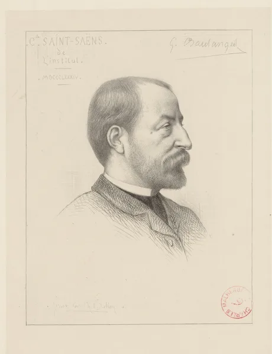

Music pioneer · Romantic · Composer arrangement studio
Camille Saint-Saëns
Choose “The Swan”, then press Play. The cello sings one long line while the piano ripples underneath, like water under a gliding swan. Isolate the cello staff to practice the melody, or the piano to hear how its arpeggios never stop moving. Playback uses sampled or synthesized instruments; consult the linked edition for fingering, bowing, pedaling, and expressive detail.
Arranging with care
A source staff is not always the melody: in an orchestral score, find the staff carrying the theme. A two-part piano study pairs your selected voice with a source bass; it is not a concert reduction and wide leaps may need redistribution. Saxophone notation is transposed while playback stays at concert pitch. Violin parts stay at concert pitch and are moved by octaves to sit above the open G string. Guitar tab preserves pitch and rhythm but may need a different octave or fingering. Original ensembles are available only where the source contains those parts. Piano reductions and original classroom studies retain their source identities.
Recordings: Nicholaus P. Brosowsky’s Tonejs-Instruments sample collection, CC BY 3.0; VSCO 2 Community Edition, CC0. Sample credits and processing.
Music pioneer · Romantic · 1835–1921
About Camille Saint-Saëns

Camille Saint-Saëns (1835–1921) was a child prodigy, a dazzling organist and pianist, a teacher, a scientist at heart, and one of the most versatile composers France has produced. His most-loved melody came from a musical joke he refused to publish.
Life and context
Saint-Saëns was born in Paris on 9 October 1835 and raised by his mother and great-aunt after his father died. He began piano at two and composed at three. At ten he gave his public debut at the Salle Pleyel with concertos by Mozart and Beethoven, and offered, as an encore, to play any of Beethoven’s 32 sonatas from memory.
He studied organ and composition at the Paris Conservatoire, and from 1858 to 1877 was organist of the Église de la Madeleine, one of the best church posts in Paris. Franz Liszt, after hearing him improvise, called him the greatest organist in the world. As a piano teacher at the École Niedermeyer he taught the young Gabriel Fauré, who became a lifelong friend.
After France’s defeat in 1871, he helped found the Société nationale de musique to promote new French music. His works include five piano concertos, the tone poem Danse macabre (1874), the opera Samson et Dalila (1877) and the Symphony No. 3, the “Organ” Symphony (1886). In 1908 he wrote L’Assassinat du duc de Guise, one of the very first original scores composed for a film.
In 1886 he wrote The Carnival of the Animals, fourteen comic movements for a private Mardi Gras concert, full of musical jokes about lions, tortoises, fossils and even pianists. Worried it would hurt his serious reputation, he banned its publication during his lifetime, with one exception: “The Swan”. He travelled widely, studied astronomy, wrote poetry and essays, and died in Algiers on 16 December 1921. The Carnival was published the following year and has been a favorite ever since.
Camille Saint-Saëns: a timeline
- Born in Paris on 9 October.
- Public debut at the Salle Pleyel, aged ten.
- Becomes organist of the Église de la Madeleine, Paris.
- Teaches piano at the École Niedermeyer; Gabriel Fauré is a pupil.
- Co-founds the Société nationale de musique.
- Composes the tone poem Danse macabre.
- Samson et Dalila premieres in Weimar.
- Writes the “Organ” Symphony and The Carnival of the Animals.
- Composes one of the first original film scores.
- Dies in Algiers on 16 December.
- The Carnival of the Animals is published.
Melody over rippling accompaniment
Much Romantic music sets a singing melody over a moving accompaniment. In “The Swan”, the piano plays even, rippling broken chords (arpeggios) in sixteenth notes, while the cello holds long, smooth notes above them.
The two layers move at very different speeds. The fast layer gives a feeling of motion; the slow layer floats on top. That contrast is what makes us “see” a swan gliding calmly over moving water.
Music pioneer · Romantic
Sound experiment: melody over rippling accompaniment
Version A plays a melody alone. Version B adds a rippling accompaniment underneath. Which one sounds more like something gliding over water?
This is an original classroom demonstration of a musical idea, not an excerpt or recording of the composer’s work.
Choose a version, then press Play.
Guided listening
Choose a performance of one of these works. Listen once for its overall character, then again for the detail in the prompt.
- “The Swan”: listen for the cello’s long phrases and where it breathes between them.
- “Aquarium”, also from The Carnival of the Animals: compare another watery accompaniment, this time glittering and mysterious.
- Danse macabre: hear a solo violin with a deliberately “wrong” tuned string play the role of Death.
Practice and reflection
- Isolate the cello. Mark every place the melody takes a breath. How many phrases are there?
- Isolate the piano. How many notes does the right hand play for each cello note in bar 3?
- Name another animal. What kind of accompaniment would you choose to describe how it moves?
Check your listening
The piano’s rippling sixteenth notes keep moving the whole time, while the cello plays long notes slurred together. Fast motion underneath and slow motion on top creates the gliding image. A useful answer names a feature you can hear and explains its effect. More than one interpretation is possible.
Use the heart | save pill to keep these notes in this browser, or copy them before leaving.